プロフィール

TAKEKI
埼玉県飯能市出身の21歳
東京工業大学生命理工学院2年生
大学2年の春休みを利用してHTML、CSSの勉強に取り組んでいます。(3/1～)
webデザイン勉強の記録のためGithubを通してサイト公開しました。
ぜひ見ていってください。
経歴
- 18歳：川越高校卒業・大学入試不合格
- 19歳：浪人
- 20歳：東京工業大学生命理工学院 合格
- 21歳：東京工業大学生命理工学院生命理工学系 在籍
趣味
-
PIANO
小学校２年生からピアノを習い始めました。
当時は嫌で何度も辞めたいと言っていたが、今となってはストレス解消にもなり、 ピアノが弾けることで音楽を楽しむ幅が広がりました。
-

MOVIE
配信の映画やアニメを観ることが多いです。
『インターステラー』と『キセキ～あの日のソビト～』が最も印象に残っているおすすめの映画です。
アニメは転スラが一番好きで他にもDr.Stoneやかぐや様など様々なジャンルを観ています。
韓国ドラマも好きで、『愛の不時着』や『社内お見合い』観てすごく恋愛したくなりました。
( ´∀｀ ) -

CARS
小さいころから車（特にスーパーカー）が大好きで、R35GTRを買うという小学生の時からの夢があり、それに向かって勉強を頑張ってきました。
この調子でいけば十年以内に買えると考えているので、今ではGTRはただの通過点で最終目標はフェラーリを買いたいと思うようになりました。